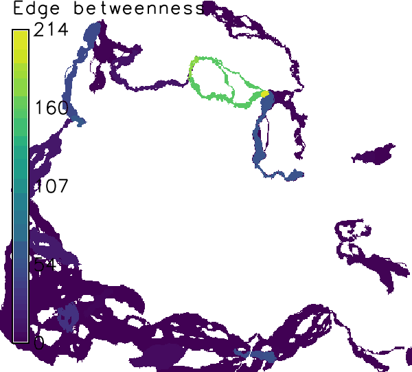
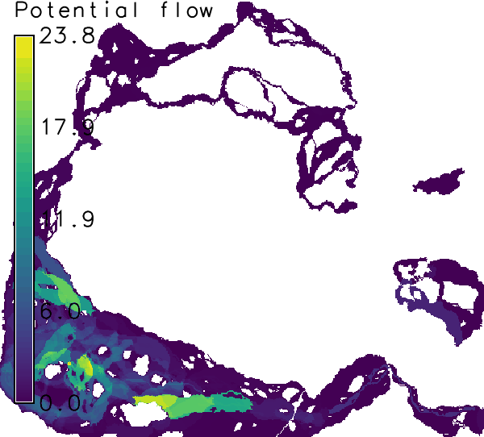

DESCRIPTION
r.connectivity.corridors is the 3rd tool of the r.connectivity.* toolset.
r.connectivity.corridors loops through the user-selected edges
(where option) of the edge-measure output vector map from
r.connectivity.network and computes the respective corridor(s).
Corridors are defined as all pixels that have a lower average cost distance
from a pair of patches than the average cost distance between that pair.
The user can add a tolerance for allowed deviation from cost distance
within corridors in %, using the corridor_tolerance option.
r.connectivity.corridors can account for the importance of the
corridors for the entire network by weighting them with regards to one or
more network measures from r.connectivity.network, using the
weights option.
Thus, r.connectivity.corridors produces two types of output,
that are named according to a user defined prefix and suffix:
- a set of individual corridor raster maps
(named: prefix_corridor_edge_id_weight) and
- a summary over all computed corridors
(named: prefix_corridor_edge_id_weight_sum_suffix).
Finally, all individual corridors are being put together using r.series.
In this step, the values of the cells in all corridor maps are summed up,
which indicates the importance of an area (raster cell) for the network
of the given patches (either the number of corridors a cell is part of,
or other graph-theoretical measures for corridor importance).
NOTES
Corridors are only computed for an undirected graph.
EXAMPLE
The following example is continued from and based on the example in
r.connectivity.network!
In this example two alternative (or to some extent complementary) sets
of corridors are calculated:
Corridor set 1:
For the first set, corridors are only computed for the minimum spanning
tree (in literature sometimes called the backbone of an ecological network).
This is specified in the "where"-parameter. Edge betweenness values are
used as weights, which represent the centrality of a connection (edge)
in a network (and is therewith a measure of importance). The output is a
set of corridor raster maps (named: "prefix" _corridor_ "edge_id" _ "weight")
and a summary over all computed corridors
(named: "prefix" _corridor_ "edge_id" _ "weight" _sum_ "suffix").
r.connectivity.corridors input=hws_connectivity_edge_measures layer=1 \
weights=cd_eb_ud suffix=mst corridor_tolerance=0.05 where="cf_mst_ud>0" \
cores=1

Figure: Corridors computed for connections on the minimum spanning
tree weighted by edge betweenness in the example above.
Corridor set 2:
For the second set, corridors are computed for all edges in the graph
(network). This takes a little more time. Corridors are then weighted by
the modeled, undirected (= in oth directions) flow of propagules ("cf_u").
r.connectivity.corridors input=hws_connectivity_edge_measures layer=1 \
weights=cf_u suffix=all corridor_tolerance=0.05 \
cores=1

Figure: Corridors computed for all connections, weighted by
potential flow of propagules.
Users with a multi-processor computer (e.g. dual-core) may speed up
corridor processing by setting cores > 1 r.connectivity.corridors.
Another means for speeding up processing would be to use integer weights
(e.g. by converting edge betweenness to integer after multiplying with 10
to the power of the relevant number of digits). Then r.reclass
is used in the script instead of r.recode.
When all analysis is finished some cleanup may be appropriate, in order
to save disk space:
# Add the f-lag (-f) to the following two commands if you are sure you
# want to delete all intermediate maps from r.connectivity.*.
g.remove type=raster pattern=hws_connectivity_corridor_*
g.remove type=raster pattern=hws_connectivity_patch_*
SEE ALSO
r.connectivity.distance,
r.connectivity.network
AUTHOR
Stefan Blumentrath, Norwegian Institute for Nature Research (NINA)
{kind=link}
{kind=link}